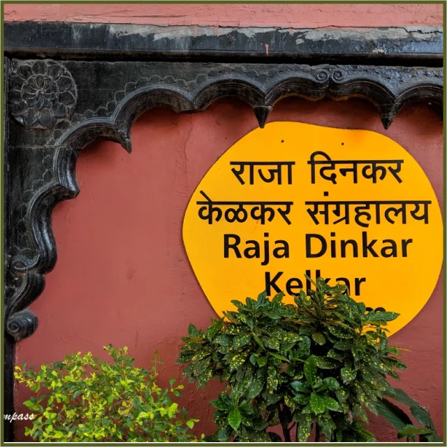

How to reach:
Via an Auto or Cab
Timings:
10 A.M - 5:30 P.M.
entry fee:
- 30 Rs (below 12yrs); 100 Rs (adults)
- 100 Rs (below 12yrs); 300 Rs (adults) for Foreigners
Restrictions:
Additional fee for photography.
Required Time:
1 to 2 hours
About:
Situated on Bajirao Road in Shukrawar Peth, the Raja Dinkar Museum, established in 1962 by Baba Dinkar Kelkar, pays
tribute to his late son. Managed by the Department of Archaeology, Government of Maharashtra, this three-story museum
showcases a vast collection of 15,000 items, including Mughal lamps, musical instruments, Ganpati's guns, intricate
carvings, pottery, and paintings depicting scenes from the Ramayana. The extensive assortment, gathered over 40 years,
features valuables from the 17th century Mughal and Maratha empires, offering a rich cultural experience for visitors.
History:
In 1962, museum management transitioned to the government, unveiling an initial collection of 20,000 exhibits, now
narrowed to 15,000 on display. Notable features include miniature statues of Lord Ganesha, Lord Shiva, and Goddess
Parvati. The highlight remains the vibrant replica of Mastani Mahal, built in 1734, exuding grandeur with elaborate
chandeliers, artistic decor, gorgeous paintings, and a regal ambiance akin to a royal palace.
More:
A notable attraction at Raja Dinkar Kelkar Museum is the replica of Mastani Mahal, constructed in 1734. Adorned with
opulent decor, grand chandeliers, and artistic paintings, the room mirrors the regal ambiance of a palace. Additionally,
the museum houses Research and Storage facilities, along with the Institute of Musicology and Fine Arts within its
premises.